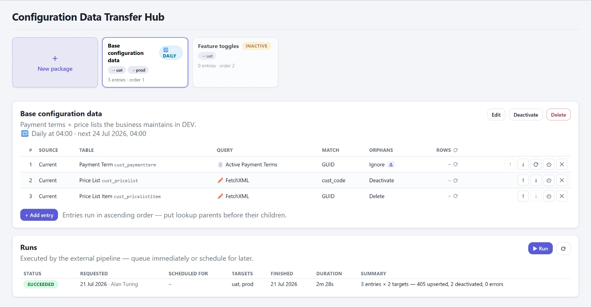

Preislisten, Gebietszuordnungen, Vorlagen, Einstellungstabellen: Konfigurationsdaten sind Daten, aber sie gehören zur Lösung und müssen mit ihr durch die Umgebungskette. Solutions transportieren sie nicht. Dafür gibt es das Configuration Migration Tool aus dem SDK, mit Schema-Datei, Export als Zip, Import auf dem Desktop. Es funktioniert. Es ist nur jedes Mal Handarbeit, niemand außer dem einen Kollegen kennt die Schema-Datei, es gibt keinen Zeitplan, keinen Probelauf und kein Delta. Die Alternative sind Excel-Importe, und über die reden wir nicht.
Ein Paket, nicht ein Lauf
Der 23. Juli war der dichteste Tag im ganzen Projekt, 37 Commits. Am Morgen war ein Transfer als externe Pipeline geplant, am Abend lief er als Cloud Flow, der mit der App installiert wird. Die Idee: Die Konsole beschreibt ein Transfer-Paket, Zielumgebungen und Reihenfolge, und darin Einträge aus Quellumgebung, Tabelle, Filter und Spalten, wahlweise über eine System-Ansicht oder direkt als FetchXML mit Vorschau und Zeilenzähler. Dazu das Record-Matching über die GUID oder bis zu fünf fachliche Spalten, und die Frage, was mit Zielzeilen passiert, die die Quelle nicht mehr liefert. Ausgeführt wird nie in der Sitzung der App. Ein Klick auf Run legt eine Zeile in eine Warteschlange, der Flow greift sie ab.
Der erste Executor brauchte 86 Sekunden für dreißig Zeilen. Die dritte Fassung ohne Variablen 37 Sekunden, die vierte mit einem Eltern-Flow je Lauf und einem Kind-Flow je Eintrag zehn. Dabei lernt man die Flow-Engine kennen: Eine Variable darf sich nicht auf sich selbst beziehen, verschachtelte Schleifen laufen immer nacheinander, und eine FetchXML-Abfrage liefert genau 5000 Zeilen, egal was man einstellt. Das Letzte ist gefährlich. Ein abgeschnittener Lesevorgang mit eingeschaltetem Löschen verwaister Zeilen hätte im Ziel alles gelöscht, was oberhalb der Grenze lag. Der Executor bricht deshalb bei erreichter Grenze ab und schreibt nichts, statt teilweise zu schreiben.

Seit Anfang August zeigt jeder Eintrag vorab seinen Write Plan: je Spalte, ob der Executor sie kopiert, als Referenz bindet oder mit Begründung überspringt, zum Beispiel einen Lookup auf eine Tabelle, die das Paket gar nicht oder erst später transportiert. Ein leerer Plan blockiert das Speichern. Dazu kamen Probelauf, Terminierung, wiederkehrende Zeitpläne und Delta-Transfers mit einem Wasserstand je Zielumgebung, damit ein Lauf, der nach UAT ankommt und nach PROD scheitert, PROD nicht für immer überspringt. Der Wasserstand ist die Lesezeit minus zwei Minuten, das deckt Uhrenabweichungen und Zeilen ab, die während des Laufs geändert werden.
Einen Fehler im Protokoll habe ich erst im August gesehen: Die Zähler zählten Versuche, nicht Ergebnisse. „6 erstellt, 68 aktualisiert" waren in Wahrheit 16 Aktualisierungen und keine einzige Erstellung. Seit dem 19. August steht der echte Zeilenfehler im Log.
Die Datenbank ansehen, ohne Toolbox
Am 29. Juli entstand der OData Browser, in fünf Schritten an einem Tag. Vorher war das der FetchXML Builder in der XrmToolBox, wieder ein Desktop, wieder eine Anmeldung je Umgebung. Jetzt wählt man Tabelle und Spalten, nicht selektierbare Spalten sind ausgegraut mit Begründung, der Filter-Builder bietet nur typrichtige Operatoren, und die Abfragezeile ist editierbar und mit dem Builder gekoppelt. Was der Builder nicht abbilden kann, bleibt wörtlich stehen. Ein Klick auf eine Zeile zeigt den ganzen Datensatz, Lookups sind klickbar, ein Reiter listet die abhängigen Tabellen.
Er ist lesend, und er trägt einen Hinweis, der kein Tooltip ist, sondern ein Streifen: Die Abfragen laufen als Dienstkonto des Konnektors, nicht als angemeldeter Benutzer, und ignorieren damit die persönliche Sicherheit auf Zeilen- und Feldebene. Deshalb hinter der Rolle, deshalb kein Schreiben.
Am 14. September habe ich einen SQL-Reiter dazugebaut, Dataverse bietet eine T-SQL-Teilmenge über die Web API. Am selben Tag wieder ausgebaut. Die Bedingung war, dass er gegen jede konfigurierte Umgebung läuft, und dafür gibt es keinen Weg: Der Konnektor kodiert den Parameter kaputt, die native Datenquelle erreicht nur die eigene Umgebung, und für fremde gibt es kein Token. Gegen jede Umgebung oder gar nicht. Der Befund steht im Handbuch, damit ich es nicht noch einmal versuche.
Vom Werkzeug zum Produkt
Die Konsole war an einen Kunden gebunden: Präfixe des Kunden im Datenmodell, Umgebungen in einer Konfigurationsdatei, Rollenname im Code. Am 24. Juni kam das eigene Datenmodell unter dem Publisher DynamicsPro, und die Konfiguration zog in Dataverse-Tabellen um. Am 24. Juli der erste managed Export, Version 1.0.0.12, und am selben Tag der Einrichtungsassistent: Startet die App ohne Konfiguration, schiebt er sich davor, bietet die erreichbaren Umgebungen an, füllt die eigene aus und schlägt Publisher und Rolle vor. Bis zum 16. September wurden es sechzehn Releases bis 1.0.0.29, jedes mit einem Eintrag im Changelog, der sagt, was sich geändert hat und was nicht.
Zwei Dinge habe ich dabei gelernt, die mit der App nichts zu tun haben.
Das erste: Ein Cloud Flow, der in der Entwicklungsumgebung läuft, läuft nach dem managed Export beim Kunden nicht. Die Adresse der Host-Umgebung war in die Flows eingebacken, beim Kunden war sie unerreichbar, die Aktivierung scheiterte mit 401 und der Designer zeigte nur vierzehn von fünfunddreißig Aktionen. Die Lösung ist ein Wort: organization: "current" statt einer URL. Version 1.0.0.14, einen Tag nach der ersten.
Das zweite: Das aktive Profil der Power-Platform-CLI überlebt den Wechsel zwischen zwei Werkzeugaufrufen nicht. Am 5. August landete eine Versionserhöhung in der Umgebung eines Kunden statt in meiner Entwicklungsumgebung. Am 17. August war mitten im Lauf ein anderes Kundenprofil aktiv, und nur ein zweiter Guard hat den Push in diese fremde Umgebung verhindert. Seitdem gehören Profilwahl, Prüfung der Ziel-URL und die schreibende Aktion in einen einzigen Aufruf, und das steht an erster Stelle im Handbuch.
Und dann die Demo-Daten. Eine App, die mit Beispieldaten vorführbar sein soll, darf darin keine Namen, Tabellen oder Organisationen echter Kunden tragen. Ich habe das in drei Durchgängen im September bereinigt, weil der Sweep jedes Mal nach den Schreibweisen suchte, die er zuletzt gefunden hatte, statt nach dem Kürzel des Kunden. Und weil er im ersten Durchlauf nur 836 Kilobyte von 2,17 Megabyte des Pakets gelesen hatte, wegen eines falschen Musters beim Entpacken. „Keine Treffer" bewies nur, dass nichts gelesen wurde. Der Sweep läuft jetzt immer mit einer Kontrollsuche, deren Treffer da sein müssen. Eine nicht versionierte Umgebungsdatei hatte außerdem die DevOps-Organisation eines Kunden in jedes je exportierte Paket gebacken. Das ist der Stand, mit dem die Konsole jetzt zu anderen Kunden geht.
Wo es steht
Einundzwanzig Arbeitsbereiche in vier Gruppen, neun Tabellen, drei Flows, eine Rolle, ein Paket. 379 Commits zwischen dem 10. Juni und dem 21. September, gebaut neben den Mandaten. Offen sind der parallele Merge, die Power-Platform-Pipelines und ein Onboarding-Assistent, der neue Kollegen durch den Release-Zug führt. Wer alles auf einer Seite sehen will: die Produktseite zählt es auf. Und wer es im eigenen Tenant sehen will, schreibt mir.